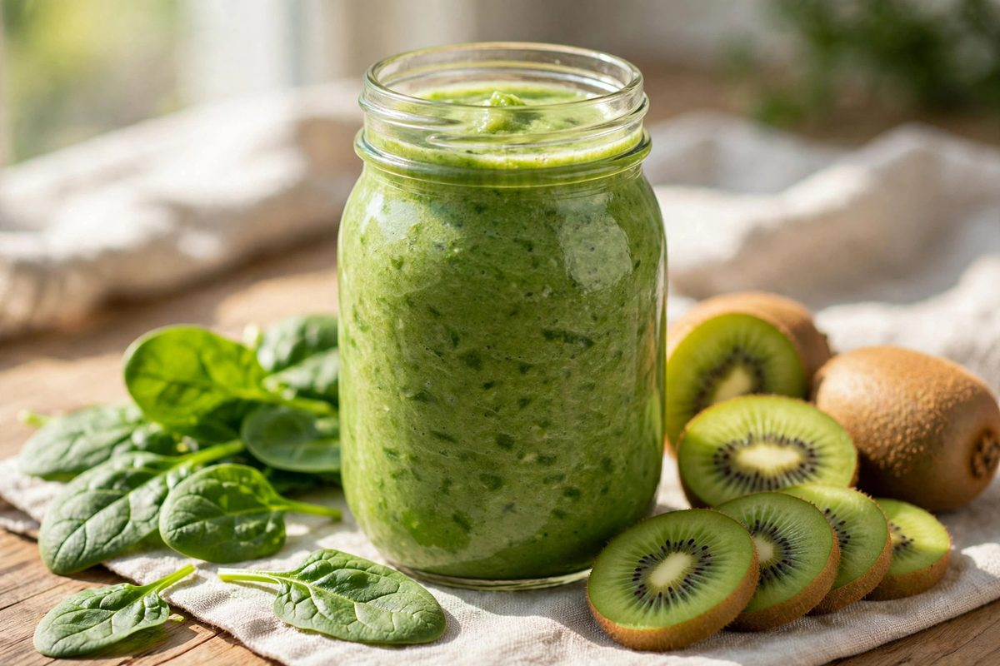

Home » Guides
Green Smoothies

Green smoothies have a reputation for being healthy but hard to love, and that is a shame, because a good one tastes sweet, fresh, and creamy rather than grassy. The trick is balance: enough fruit to sweeten the greens, a creamy base, and the right ratio of leaves to everything else. A green smoothie is one of the easiest ways to eat more leafy greens, and it takes five minutes to make. This guide covers choosing greens, building a balanced recipe, and avoiding the common mistakes that make green smoothies taste bitter.
Choosing your greens
Baby spinach is the best green for beginners: it is mild, blends completely smooth, and hardly changes the flavour. Kale is more nutritious but stronger tasting, so use less of it and remove the tough stems first. Swiss chard, romaine lettuce, and cucumber are all mild options that blend well. Rotate your greens through the week rather than using the same one every day, because different greens provide different nutrients. Wash leaves well, and freeze any you will not use quickly, because frozen greens blend just as well and reduce waste.
The 60-40 rule
A good starting ratio is about sixty percent fruit and forty percent greens by volume, with a cup of liquid. For one large smoothie, that means roughly two cups of fruit, one large handful of greens, and a cup of milk, water, or coconut water. As you get used to the taste, you can shift the balance towards more greens. Blend the greens with the liquid first until completely smooth, then add the fruit and blend again. This two-step method avoids flecks of leaf and gives a much smoother drink than blending everything at once.
Three starter recipes
The beginner green smoothie blends one banana, one cup of mango, a large handful of spinach, and a cup of milk. It tastes like a fruit smoothie, and the spinach is almost invisible. The second recipe uses one pear, one cup of pineapple, a handful of kale, and a cup of coconut water, with a squeeze of lime for freshness. The third is a creamy avocado green smoothie: half an avocado, one banana, a handful of spinach, and a cup of oat milk, with a teaspoon of honey if you like it sweeter. All three take under five minutes and make one large serving.
Common green smoothie mistakes
The most common mistake is using too many greens and too little fruit, which makes the smoothie bitter and hard to finish. Another is blending everything at once, which leaves leafy bits. Using only water as the liquid can make a green smoothie taste thin, so add milk, yoghurt, or a creamy fruit like banana or avocado. Skipping ice is a mistake too: a handful of ice makes the smoothie cold and thick, which improves the flavour. Finally, do not add too many ingredients at once; three or four is enough, and you can always taste and adjust.
Making green smoothies a habit
The easiest way to keep making green smoothies is to make them part of a routine. Keep a bag of frozen spinach and a bag of frozen mango in the freezer, and keep bananas on the counter, so the ingredients are always to hand. Make your smoothie at the same time each day, for example with breakfast, so it becomes a habit rather than a decision. Prepare a few freezer packs on Sunday with the fruit and greens portioned out, so the morning blend takes less than a minute. Vary the fruit through the week so you do not get bored, and keep a list of your favourite combinations on the fridge.
Frequently Asked Questions
Can I taste the spinach in a green smoothie?
Barely. Baby spinach is very mild, especially with banana or mango. If you can taste it, add more fruit or a squeeze of lemon.
Are green smoothies healthy every day?
Yes, as part of a varied diet. Rotate your greens and fruits, and do not replace whole meals with smoothies every day.
Can I make green smoothies ahead of time?
Yes, for up to 24 hours in a sealed jar in the fridge. Shake well before drinking, as the smoothie will separate.